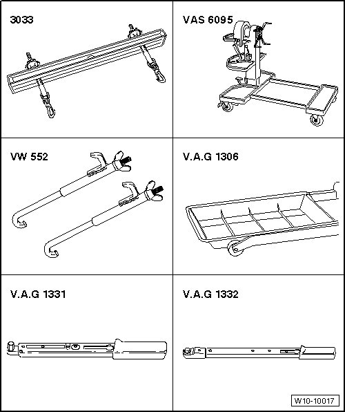
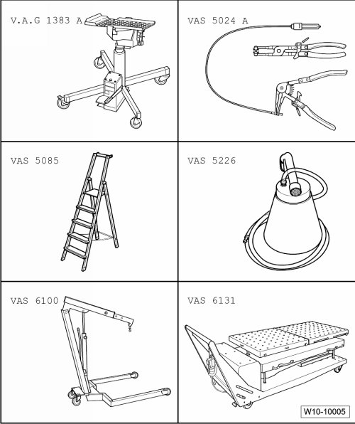

Engine: Tools and Equipment
Special Tools
Special tools, testers and auxiliary items required
• Adapter (V.A.G 1318/20)
• Adapter (V.A.G 1318/20-1)
• Container for removed components (V.A.G 1698)
• Left subframe mounting (VAS 6131/6-1)
• Right subframe mounting (VAS 6131/6-2)
• Left suspension support (VAS 6131/6-3)
• Right suspension support (VAS 6131/6-4)
• Supports (VAS 6131/6-5) (Qty. 2)
• Supports (VAS 6131/6-6) (Qty. 2)
• Transmission support (VAS 6131/6-7)
• V6 engine support (VAS 6131/7)
• Cable tie

Special tools, testers and auxiliary items required
• Lifting tackle (3033)
• Tensioner hooks (VW 552)
• Engine and transmission holder (VAS 6095)
• Drip tray (V.A.G 1306)
• Torque wrench (5 to 50 Nm) (V.A.G 1331)
• Torque wrench (40 to 200 Nm) (V.A.G 1332)

Special tools, testers and auxiliary items required
• Engine/transmission jack (V.A.G 1383 A)
• Spring-type clip pliers (VAS 5024A)
• Step ladder (VAS 5085)
• Diesel extractor (VAS 5226)
• Shop crane (VAS 6100)
• Scissor lift table (VAS 6131)